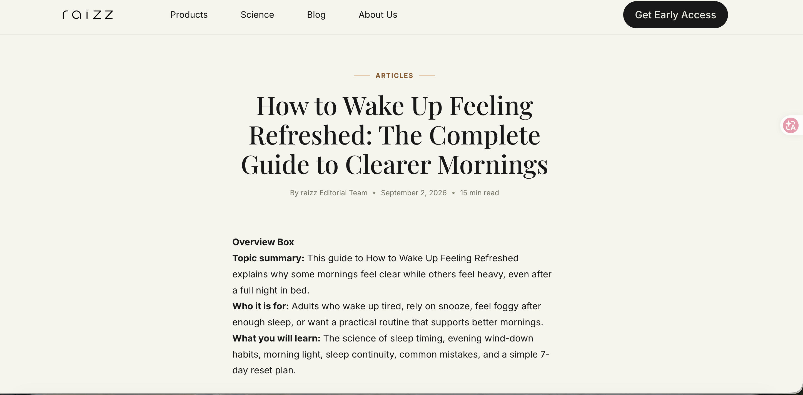
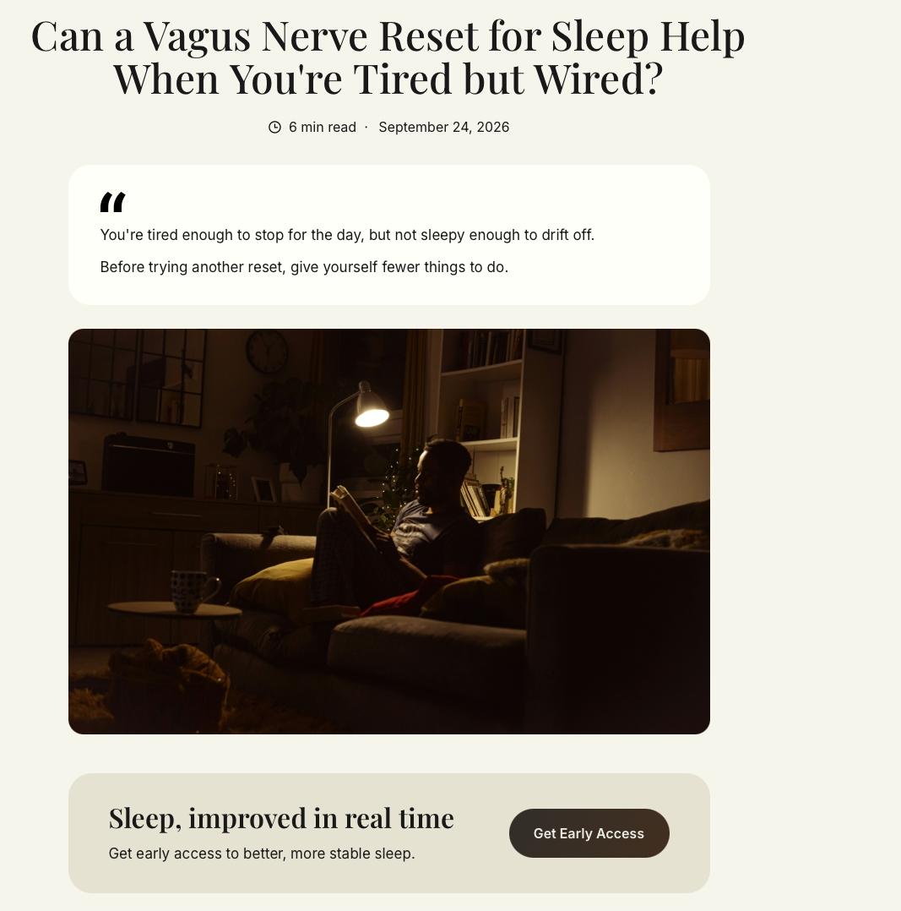

Axi Technology | Product Growth Intern
Shenzhen · July 2026–present
Focus: search demand, SEO/GEO, data analysis, technical SEO, AI workflows and international growth channels.
raizz is a consumer sleep-tech brand from Axi Technology. It combines a sleep wearable with a companion app, exploring how gentle vibrations and personalised sleep guidance can offer support beyond simply tracking sleep data.
My work focuses on growing the brand in the US. I look at people's sleep needs and search habits, then use SEO / GEO, website content and international channels to help relevant audiences discover and understand the product. I use data to assess which efforts are actually reaching those audiences.
Starting with the right growth questions
One question kept coming up during this internship: if the website is getting visits, does that mean SEO is starting to work?
Looking only at total traffic, it's easy to say yes. But break it down by landing page and source, and the answer can change. Did people arrive through organic search, a direct link or another website? Did they land on a Blog, an Article or a product page? Is this week's data complete, and can we fairly compare it with last week?
These questions are much closer to the heart of my work than “How many articles did I write this week?”
I’m an intern at axi, working on US market growth for its sleep-tech product, raizz. My responsibilities include keyword and search-intent research, AI content workflows, publishing and search monitoring. I also research creators, guest-post opportunities and media outlets. Articles are one way to put that work into practice. The ongoing decisions are about where demand exists, which page should address it, where visitors come from and what to improve next.
I think of the process as researching demand, choosing opportunities, delivering content and web pages, then checking those decisions against search and traffic data.
My responsibilities and output so far
My work spans three areas: researching search opportunities, delivering content and technical updates, and monitoring results after publication. AI workflows connect some of the repetitive tasks, but they don't replace choosing topics, checking evidence or interpreting results.
| Area | My responsibilities and output so far |
|---|---|
| Search and content | Keyword, search-intent and topic research; 25 new pieces of content and updates to 16 existing pieces |
| Web and technical SEO | Supported the launch or update of 50 articles and 12 website pages, checking structure, links, assets and search settings |
| Monitoring and troubleshooting | Tracked landing pages and traffic sources; used search tools to distinguish crawling, indexing and canonical status; helped resolve 12 indexing or web-page issues |
| International channels and competitors | Researched the sleep-tech market; assessed more than 85 creators and 34 websites or media outlets |
These figures measure work at different stages and overlap. They shouldn't be added together as a count of separate projects. I also keep delivery volume separate from growth results: publishing a page, earning search impressions, attracting visits and forming a useful partnership are different outcomes.
How SEO research shapes my priorities
Start with intent, not a keyword list
My research focuses mainly on the US market. I use search volume, keyword difficulty and search results from tools such as Semrush to decide whether a topic is worth pursuing.
Search volume is an estimate of demand, not the traffic a new page is guaranteed to receive. Keyword Difficulty helps indicate competition; it isn't a precise probability that our website will rank. I look for three things together: relevant demand, a page that can meet that demand, and a topic that matters to the brand's audience.
For example, sleeping heart rate and sleeping heart rate by age both concern heart rate at night. But one person may want to understand why it changes, while another wants information by age. Similar wording doesn't mean we should publish two articles with the same structure.
I need to look at the results: what kinds of pages already rank? Which questions do they answer? Does our existing content cover the same intent? What would a new page add?
That has become my approach to choosing topics: before adding a page for a keyword with search volume, decide what job that page will do on the site.
Consider trends and competition together
The keyword research later expanded into three kinds of demand:
- Evergreen: questions that remain relevant over time and help build lasting coverage of a topic.
- Seasonal: needs tied to a season or event, where research and publication have to happen early enough.
- Trending: new or growing topics that need checking for genuine momentum and relevance to the audience.
The team discussed trend terms such as sleepmaxxing. I learnt that finding a new term is only the start. Will interest last? Do readers need an explanation or a product comparison? Do we have enough evidence to answer their questions? All of that affects whether the topic is worth covering.
I consider business relevance, search intent, competition, trends and existing content together. This is a decision about where to invest effort, rather than a writing list sorted by search volume.
Page structure is part of the search strategy
Once we choose a topic, the title, headings, main questions and internal links need to serve the same search intent. Related topics should have clear differences while helping readers find the next useful explanation.
This changed how I review content. I look beyond whether the writing reads smoothly. Does the page deliver what its title promises? Does it fill a gap on the site? Does the product information actually answer the reader's question?


I wrote this Article independently for the raizz website: “How to Wake Up Feeling Refreshed: The Complete Guide to Clearer Mornings”. Screenshot taken on 5 October 2026.
Check the definitions before explaining the numbers
Breaking down landing pages and channels
I use GA4 to review landing-page performance and organise Sessions, New Users and channels such as Direct, Referral and Organic Search by page type, including Blog and Articles.
Landing-page analysis tells us which page someone entered the site through on a particular visit. It doesn't tell us every page they viewed during that visit. That distinction matters when judging whether content is bringing people in.
The channel dimension also has to match the question. To study the source of a session, use session-scoped channels or source/medium. To study where new users were first acquired, use user-acquisition dimensions. The two can't simply be swapped for convenience. Google Analytics' guide to traffic-source scopes
While learning the reports and reviewing actual data, I saw cases where Articles had landing-page visits but the traffic leaned towards Direct. That doesn't prove SEO is bringing in organic visitors. Nor does a Direct label, on its own, mean all those visits came from our team.
The next step is to look at the specific sources, pages and dates, rather than draw a conclusion from a total that happens to be rising.
What I look for in the data
I'm more interested in whether the numbers support a decision than in copying them into a weekly report. The work has helped me build a few checking habits:
Check what is being counted. Page types, landing-page paths and filters need to match. If the site uses /articles/, a shortened label in a spreadsheet isn't necessarily a valid exact-path filter. A zero in one view doesn't automatically mean there were no relevant visits anywhere on the site.
Check the comparison. An unfinished week can't be compared directly with a full week. Dates, time zones, page sets and channel definitions should be consistent. New pages also launch at different times, so their observation periods may differ.
Look at shares and counts together. Organic Search's share can rise because organic sessions increased or because other channels declined. I look at channel shares alongside Sessions, rather than highlight only the better-looking percentage.
Be careful with small samples. When the starting numbers are small, a handful of sessions can create a large swing. I look for a sustained change, whether it's concentrated on particular pages, and whether its timing matches publication or channel activity. I don't rush to call one fluctuation a strategic win.
Separate observations, hypotheses and checks. “Organic visits to this page type haven't changed much” is an observation. “Indexing might be involved” is a hypothesis. Checking the crawl and indexing results for specific URLs is the next test. Those steps shouldn't collapse into an unproven causal claim in a report.
Turning data into a next step
The experience has helped me develop a troubleshooting framework. These are possible paths to investigate, not a claim that every situation has occurred in this project:
| What we observe | What to check first |
|---|---|
| A page isn't indexed | Crawlability, response status, canonical tags, duplicate pages and the content itself |
| A page is indexed but has few impressions | Query demand, content fit, competition and how long the page has been earning impressions |
| A page gets impressions but relatively few clicks | Specific queries, rankings and how it appears in results; don't blame the title alone |
| Total visits in GA4 increase | Which pages and channels account for the increase, and whether organic search grew too |
| A page gets visits but its business value is unclear | Whether the intended actions are defined and tracked correctly; visits aren't a substitute for conversions |
My work so far focuses on monitoring pages, channels and indexing. I'd like to extend that into measuring actions such as learning about the product or signing up for Early Access. Until the events and data are checked, I don't present them as conversion results we've already achieved.
Technical SEO gives search growth a foundation
Keyword research helps us choose which demand to pursue. Technical SEO helps check that pages can be accessed, discovered and processed properly.
I use Google Search Console and Bing Webmaster Tools to follow discovery, crawling, indexing and canonical status, comparing their reports with the actual pages, links and published versions.
Understand the status before submitting again
I've followed up on “Discovered—currently not indexed”, “Crawled—currently not indexed”, redirect notices, and cases where the search engine selected a different canonical URL from the one declared on the page.
Any of these may coincide with a page failing to appear as expected in search, but they don't all have the same cause. Passing a live test only tells us what that test found at that moment. It doesn't prove that the page is indexed as intended.
We first need to locate the issue: access and redirects, canonicalisation, or a search system that hasn't finished processing the page. Requesting indexing is one step in the process, not a fix for every status.
Keep URL signals and published pages consistent
My checks cover responses, redirect destinations, canonical tags, internal links and sitemaps. I also look at asset paths, caches and release versions when investigating a problem.
I care about whether those signals point to the same intended page, not just whether a particular tag exists in the HTML. A canonical tag is a signal, not a command. Internal links and sitemaps should also use the preferred canonical URL. Google's guide to canonical URLs and duplicate pages
Priorities matter here too. A normal redirect to a canonical URL isn't the same as a redirect loop or a wrong destination. A title-length warning isn't automatically the cause of an indexing problem. Checking the actual impact first helps avoid spending too much time on minor notices.
My process became a continuing loop: log the issue, compare the evidence, identify the cause, help fix it, check the live result, then monitor its search status. The 12 indexing or web-page issues I helped resolve are the output from this part of the work so far.
GEO is about how content is understood and cited
GEO, or Generative Engine Optimization, concerns the visibility of a brand and its content in generative search and AI answers. It overlaps with SEO, but it doesn't just mean writing with AI. Ordinary organic-search growth also shouldn't be counted as a GEO result.
My work in this area mainly involves content structure, checking evidence and keeping brand information consistent. I don't equate those improvements with a demonstrated increase in AI citations.
Write clear answers with evidence behind them
When structuring and reviewing content, I focus on:
- A clear question. Titles and sections should address specific questions. Give a useful explanation early, then expand on the conditions and details.
- Enough context. Keep numbers and conclusions close to their scope and limitations, so a sentence doesn't become misleading when read on its own.
- Evidence that fits the claim. Sources need to be real and relevant. Findings from third-party research mustn't be rewritten as proof about our own product.
- Consistent brand facts. Product positioning, features and limits should agree across articles, rather than change with each generated draft.
Overviews, clear headings and relevant questions and answers can help readers find information quickly. I wouldn't sell any fixed format as a guarantee of an AI citation.
For Google AI Overviews and AI Mode, for example, the official guidance still emphasises core SEO, indexability and reliable content. It doesn't require an extra, special schema. That guidance is specific to Google's products; it doesn't replace research into other AI search services. Google's guidance on AI search features and websites
Measure the work separately from the GEO result
To evaluate GEO performance later, we'd need a consistent way to observe it: a fixed set of business-relevant questions, with records of the platform, test date, whether the brand appeared, whether the site was cited and which page received the citation.
Brand mentions, linked citations, visits and subsequent actions are different metrics. Identifiable referral visits from an AI product in GA4 tell us about those visits. They don't measure all AI exposure.
This is my proposed next step for GEO measurement, not a monitoring system I've already deployed and proven effective. I want to define what we're measuring before talking about growth.


I independently wrote and published “Can a Vagus Nerve Reset for Sleep Help When You're Tired but Wired?” on the raizz website. This public page shows content delivered, not evidence of AI citation performance.
AI workflows turn decisions into repeatable work
In this process, the AI content workflow helps turn selected topics into pages that meet our requirements, consistently.
Building on the team's existing scripts, I led the setup and iteration of the production and publishing workflow for my own content. It covered keyword and search-intent inputs, generation and review with tools such as ChatGPT, Claude and Gemini, human quality checks, HTML checks, images and alt text, sitemap updates and GitHub submissions. Using several tools doesn't mean every piece was automatically co-written by several models.
What needed to become consistent was the input, the checking criteria and the delivery status: where the topic came from, whether the sources supported the claims, whether page information agreed, which URL the output belonged to and who needed to confirm the next step.
Automated checks are useful for word counts and some formatting, link and asset issues. Human review needs to assess logic, facts, brand boundaries and search intent. Giving each the right job matters more than generating faster.
I see the workflow as a way to carry out a growth strategy. The number of pieces generated isn't growth itself.
International channels offer another set of leads
Alongside on-site SEO and GEO, I researched creators, guest posts and PR/media opportunities around brands such as Whoop, Hatch, Withings and SleepScore. I wanted to understand where relevant audiences found information and which creators and outlets already covered the space.
I assessed creators by content relevance, engagement, activity, previous partnerships and brand fit, rather than simply ranking them by follower count. For guest posts and media opportunities, I considered content quality, audience relevance, traffic and partnership terms together.
Competitors' networks offered possible leads. But a platform that had worked with a competitor wasn't automatically right for raizz. Each still needed checking against our audience, the content context and the practical terms of working together.
I also took part in initial outreach, replies and follow-ups, keeping track of contact status and next actions. For guest posts, that meant following through to the published URL and distinguishing screening, submission and publication. Sending a task wasn't the result.
At the time of writing, I'd assessed more than 85 creators and 34 websites or media outlets. Channel research and on-site search research both support brand reach, but their traffic, partnership and commercial outcomes need to be tracked separately.
Building judgement, not a longer tool list
This internship has made me more certain that growth work is about making reasonable decisions from incomplete information and finding a way to test them. The length of your tool list isn't what makes the work good.
My three biggest lessons are:
First, judge the opportunity. Consider search demand, user intent, competition and brand relevance together when deciding where to invest, rather than let search volume decide everything.
Second, understand the data. Pay attention to definitions, page scope, channel mix and small-sample fluctuations. Separate facts, explanations and hypotheses. More traffic doesn't automatically mean the strategy worked.
Third, follow through on the checks. Work from page and release settings through search status, then back to sources and subsequent performance. Execution should be followed by investigation and review.
For confidentiality, this article shows only public pages and work completed so far. It doesn't include internal traffic reports, channel lists, partnership terms or unpublished plans.
I want to go deeper into connecting these foundations to clearer user actions and business results. For me, the point of this internship is to use search and user data to judge growth opportunities, act through content, technology and channels, then let the evidence guide the next step.
A long way to go. Time to get started.
I'm not going to turn an internship into a life-changing revelation. Publishing a few pages and learning to read a few reports didn't suddenly explain the world to me. But it gave me a feel for how real work happens. Nobody promises that effort will pay off, and no problem arrives with all the information filled in. You have to make a call, do the work and accept that the result may fall short—or that you were wrong from the start.
I used to think I needed to decide what kind of person I'd become before choosing a direction. Now I'm less sure the order matters. The future isn't an Excel sheet waiting for me to fill it in. Start doing things. Run into real problems. Find out what you care enough to argue for and what you're willing to take responsibility for. Some answers only appear that way.
Working in growth means spending every day thinking about what deserves to be seen. It also made me ask what I want to leave behind. I don't want a life built just to fill every box on a CV. More than another impressive job title, I want to know that without familiar tools or a ready-made process, I can still spot a problem, make a judgement and move something forward when nobody else is there to catch it for me.
Be ambitious, but don't invent the evidence. Be a little stubborn, but listen to the facts. If the numbers look bad, investigate. If the judgement was wrong, start again. If you don't understand, keep asking. None of that stops me wanting to go further and take on harder things. I'm not going to count myself out just because I'm not there yet.
This experience won't decide my whole life. But it gave me an attitude I'd like to keep: take the work seriously, and don't live scared. It's too early to say how far I'll get. I often tell myself:
Your blade isn't sharp yet. There's a long road ahead. Keep sharpening it. Keep doing the work, and you'll get better as you go.